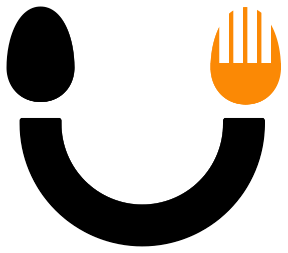

U marketRecuerda: esto es una beta.
U market ya funciona: puedes comprar y vender en el campus. Todavía la estamos puliendo, así que si algo falla, avísanos. Nos ayuda un montón.
Muy pronto
Entrar a U market
También en App Store y Google Play.
Entras con tu correo de la U.